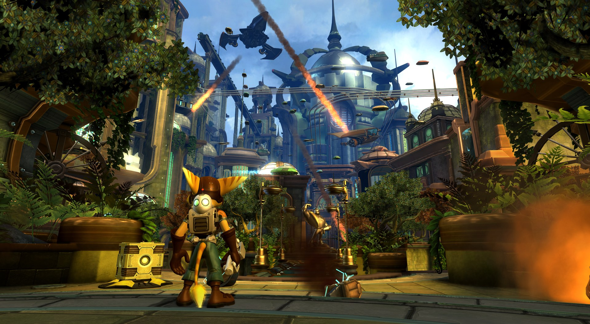
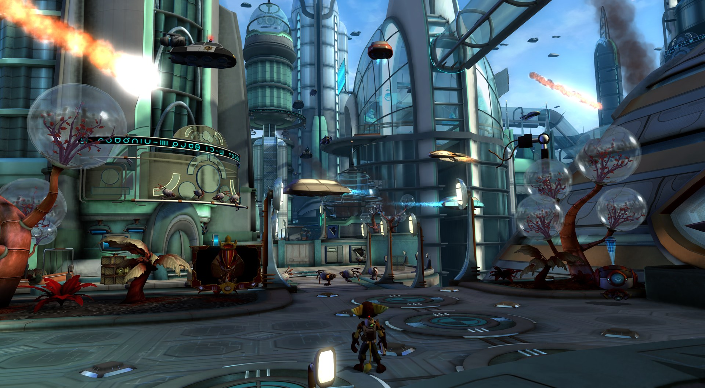
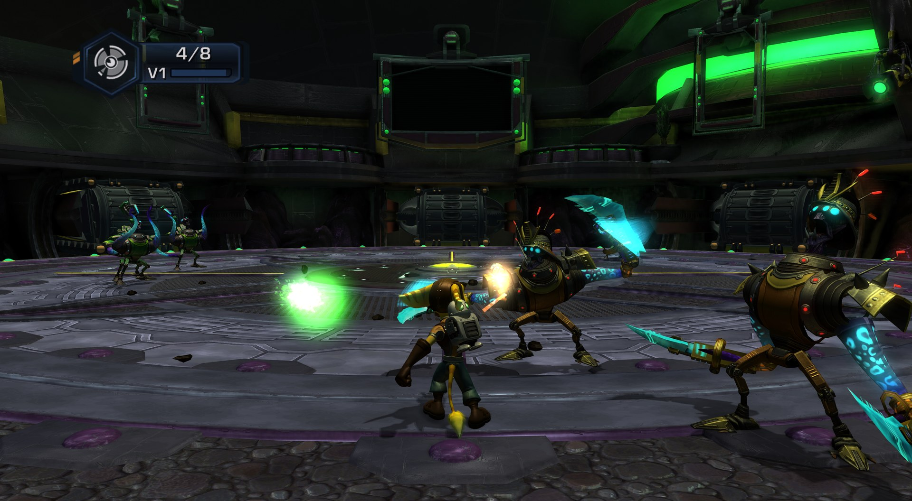
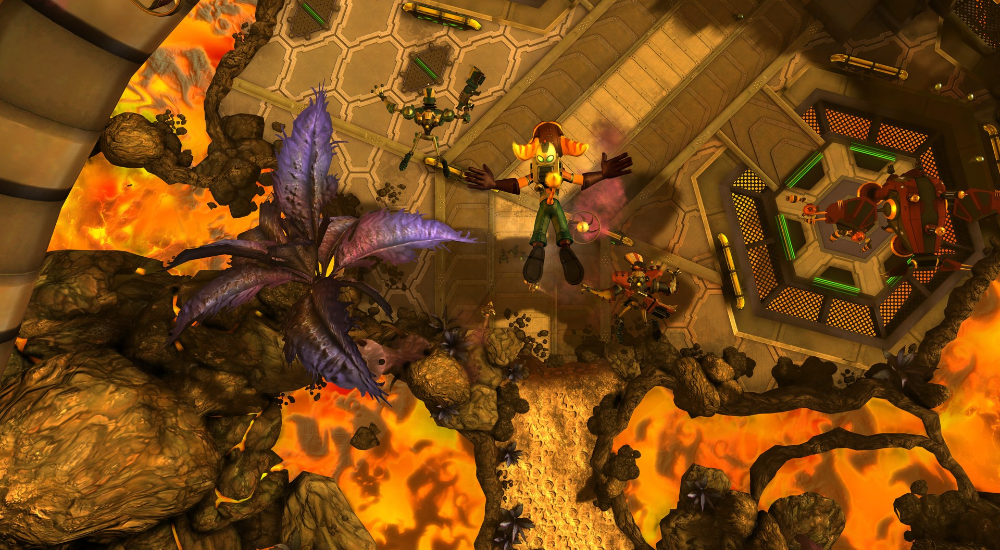
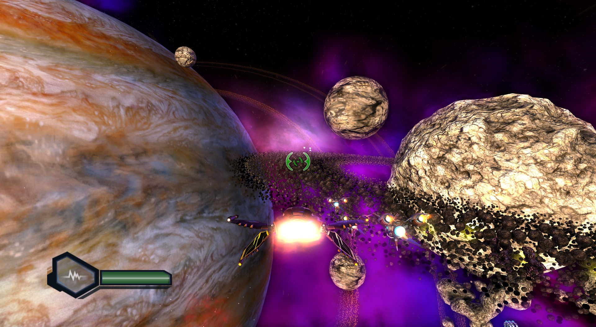
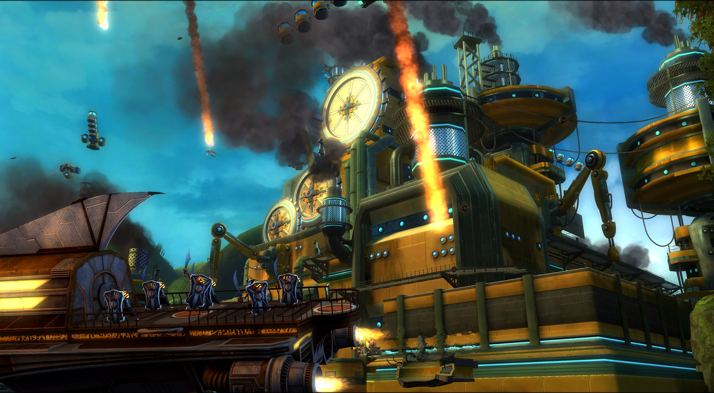

Features
Real 4K
The game's 3D scene is no longer stretched: it renders sharp at 1080p, 1440p, 4K and beyond, with MSAA or FXAA and 16x anisotropic filtering.
60 fps target
Native fast paths for the game's animation and collision code. Cobalia holds 60 fps at 4K on a Ryzen 5 3600 + RTX 3070.
Shadows and RT AO
Character ground shadows are back, and ray-traced ambient occlusion is available on DXR 1.1 graphics cards.
DualSense triggers
The right trigger clicks, rattles or resists like the weapon in Ratchet's hands, with a kick at every shot.
Settings in game
Press F1 for resolution, anti-aliasing, frame rate, language, button prompts and fully rebindable keyboard and mouse.
Mods and saves
A mods folder that replaces game files without touching them, RPCS3-style saves, and Discord Rich Presence.
Screenshots






Performance
Ryzen 5 3600 + RTX 3070, 4K with MSAA x8:
| Area | Before | 1.0 |
|---|---|---|
| Cobalia | 60 | 60 fps |
| Pirate Base | ~52 | ~58 fps |
| Imperial Fight Fest (arena) | ~49 | ~54 fps |
| Metropolis (opening) | ~24 | ~31 fps |
The heaviest scenes are limited by the CPU and are the main focus of the next updates.
Get started
- You need your own copy of the European disc (BCES00052, v1.00), dumped and decrypted as an
.isoor a folder. Nothing of the game is in the download. - Download
tod-recomp-1.0-win64.zipfrom the Releases page and unzip it (not in Program Files; about 24 GB free). - Run Install.bat, pick your disc and the game language, and press Play.
Windows 10/11 x64, a CPU with AVX2 (a fast 6+ core CPU recommended), a Direct3D 12 GPU, 16 GB RAM. Full details, settings and known issues are in the README.
Support
This is a free passion project made in my spare time. Bug reports go to GitHub Issues. If you would like to support it, you can buy me a coffee.